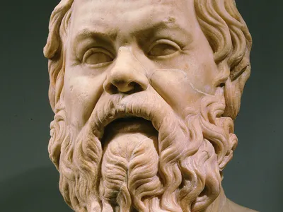

Socrates
Website made by Isaac

[ view at full screen ]
Socrates's bio:
Socrates was born in athens from 470 to 399 B.C.E. His parents was a stonemason named Sophroniscus, and a midwife named Phaenarete.
Socrates was a middle class family. His wealth made him receive little education, but he trained to become a stone mason like his father.
When Socrates became 45 years old, Socrates became a philosopher because he thought that god gave him a mission to examine people and persuade them that the health of the soul was the most important aspect.
Eventually, the athen community didn't like socrates and his enemies explained that Socrates corrupted many young people. When Socrates went to trial, he was guilty and was charged to drink toxic drink named Hemlock.
One way Socrates effected greek life is from inventing the socratic method. According to britannica.com, it states, "Socratic method, a form of logical argumentation originated by the ancient Greek philosopher Socrates (c. 470–399 BCE)." It also states, "Socrates describes himself not as a teacher but as an ignorant inquirer, and the series of questions he asks are designed to show that the principal question he raises." The invention of the socratic method made many people think deeply and question about everthing, and helped developed the basis of philosophy.
Another way Socrates effected greek life is from inspiring people to become philosophers. According to Internet Encyclopedia of Philosophy, it states, "He was the inspiration for Plato, the thinker widely held to be the founder of the Western philosophical tradition. Plato in turn served as the teacher of Aristotle, thus establishing the famous triad of ancient philosophers: Socrates, Plato, and Aristotle." Socrates inspired many people like Plato, and then the inpired philosopher inspires more people to become philosopher, like how Arsitotle was inpired by Plato. To this day, many people get inspired by socrates to become a philosopher.
The third way Socrates effected greek life is from fighting in the ancient greece military. According to britannica.com, it states, "He fought bravely in the Peloponnesian War and later served in the Athenian boule (assembly)." This effects greek life because fighting in a war can stop invaders from invading your country.